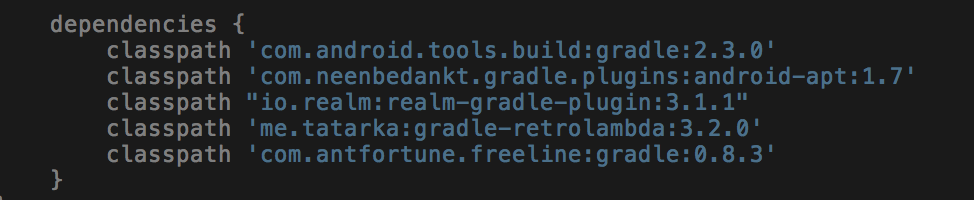
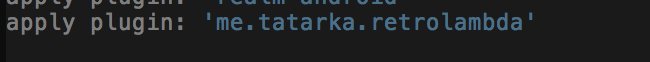
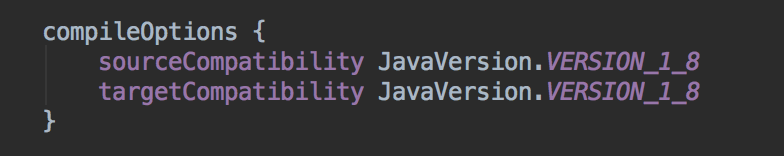
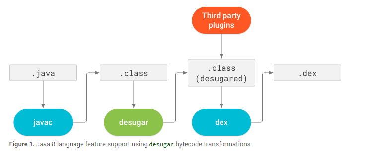

以前
我们的项目开始于去年，在那时候刚好java8出来，android原生对java8的支持并不是很理想，为了在项目中使用java8的Lambda表达式等特性，就得引入第三方库retrolambda。接着，在我们已有的项目配置对应的插件依赖：

引入retrolambda插件，

开启java 8的编译环境

接下来就可以在我们的项目中愉快的使用java8中的Lambda表达式特性。
现在
随着android studio2.4 preview4的发布，（截止到目前为止，android studio最新版本为 3.0 canary）宣布android studio原生支持java 8。使得我们开发者使用起来更加的简单，现在，我们只需在项目中配置如下即可：
使用java8特性
当我们在开发一个android应用时，使用java8新特性是可选的，我们可以选择继续使用java7继续我们的项目，但是，你需要用jdk8来编译我们的代码。 如下图所示，android studio 通过一个叫做desugared的默认工具链，在javac编译过后，将字节码转一步转化，从而实现java8特性的支持。

如何开启android studio 原生支持java8，我们已经在上面说过了，但是，有以下几点需要注意的。
android studio版本，必须是2.4 preview或以上。
android plugin 必须是3.0.0-alphal或以上。
android studio 支持的java8特性与api
android studio 不完全支持java8特性，但是相信在接下来的android studio版本，会有越来越多的特性被as所支持，但是目前来说，我们需要根据项目所配置的minsdversion版本以及下面的表格，来确认对应的api或特性在我们的项目中目前是否可以使用。
目前android studio 所支持的java8 语言特性：
| java8语言特性 | 适合的minSdkVersion |
|---|---|
| lambada 表达式 | 所有 但是lambada序列化只支持lambada所捕获的值都是可序列化的。 |
| 方法引用 | 所有 |
| 类型注解 | 所有 但是 类型注解只适用于编译时，不支持运行时，同理，as支持所有Type在api24或以下，除了ElementType.TYPE_USE or ElementType.TYPE_PARAMETER. |
| 默认和静态接口方法 | 所有 |
| 重复注解 | 所有 |
| 方法引用 | 所有 |
目前android studio 所支持的java8 api
| java8 api | 适合的minSdkVersion |
|---|---|
| java.lang.annotation.Repeatable | API level 24 or higher. |
| AnnotatedElement.getAnnotationsByType(Class) | API level 24 or higher. |
| java.util.stream | API level 24 or higher. |
| java.lang.FunctionalInterface | API level 24 or higher. |
| java.lang.reflect.Method.isDefault() | API level 24 or higher. |
| java.util.function | API level 24 or higher. |
迁移到android studio 原生默认工具链
如果android studio 检测到你的项目使用了jack、retrolambda、或者dexguard，那么as将优先使用这些工具提供的支持java8的解决方案，而不会使用原生的默认工具链进行字节码转换。相对于使用as默认的工具链，以上所说的几种方案缺少部分功能的支持，所以，接下来我们要说下如果从这些第三方库中移植到as默认工具链上来，毕竟，这玩意是google亲生的娃，相信对于前几种方法，后者会得到更好的支持。
从jack迁移
jack工具链已经被废弃掉了，接下来我们也不会使用到它，如上所述，为了是我们的项目使用as自带的java8特性，我们需要先禁用掉jack，禁用jack的方法很简单，只需要在你module下的build.gradle文件，找到以下这段代码，去掉即可。
jackOptions {
enabled true
...
}
从Retrolambda迁移
相对于android studio 的默认工具链，Retrolambda缺少那些使用java8 语言特性的第三方库的支持。从Retrolambda迁移过来，需要找到你项目根目录下的build.gradle文件，找到以下代码并注释掉
classpath ‘me.tatarka:gradle-retrolambda:
// 去掉插件的使用
apply plugin: 'me.tatarka.retrolambda'
...
// Remove this block after migrating useful configurations.
retrolambda {
...
// If you have arguments for the Java VM you want to keep,
// move them to your project's gradle.properties file.
jvmArgs '-Xmx2048m'
}
禁用java8特性
如果你实在不想在自个的项目中使用java8特性，你可以通过一下方法禁用它。 找到项目中的gradle.properties 文件，添加下面这段代码：
android.enableDesugar=false